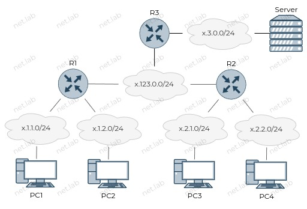

Cписки контроля доступа (ACL)
Теоретические сведения
Типы ACL
- Стандартный
- Анализ только источника
- Расширенный
- Анализ источника и получателя
- Нумерованный
- Именованный
Ключевые слова
- host
- any
- permit
- deny
Шаблонная маска
В общем случае вычисляется путем вычитания маски сети из 255.255.255.255, но может и чередовать 0 и 1 в двоичном представлении.
Примеры (Cisco)
Создание стандартного нумерованного ACL для IPv4
conf t
access-list 1 permit 192.168.10.0 0.0.0.255
access-list 1 permit 192.168.20.0 0.0.0.255
access-list 1 deny any
Создание стандартного именованного ACL для IPv4
conf t
ip access-list standard { имя }
permit host 192.168.20.2
permit 192.168.30.0 { шаблонная маска }
Примение ACL на интерфейсе в указанном направлении
conf t
int e0/0
ip access-group { номер | имя } {in | out}
Посмотреть все ACL
show access-lists
Посмотреть конкретный ACL
show access-list 1
Создание именованного ACL для IPv6
ipv6 access-list { имя }
permit tcp 2001:db8::1/64 any eq ?
🧰 Лабораторная работа
Ознакомиться перед выполнением
- Вместо ❔ или
xнужно подставить свой номер по журналу - Выполнять задание без "отмашки" не стоит ⛔, т.к. задание здесь может отличаться от актуальной версии
- У каждой работы есть срок сдачи 📅, который озвучивается на занятии, после которого работа не может быть защищена на максимальный балл 📉
- Дополнительные задания 📚 не являются обязательными, но по результатам сдачи лабораторной работы может быть выдано одно или несколько из них. Также дополнительное задание может быть сформулировано устно
- Для каждой лабораторной работы должен быть отчет 📝 с описанием выполнения ваших действий, оформление должно соответствовать требованиям (см. на сайте учебного заведения)
- Нужно уметь ответить на вопросы ❓ по теме, контрольные вопросы и другие связанные вопросы
- Примеры могут быть выполнены по желанию, а также выданы в качестве дополнительного задания с изменениями или без в случае неуспешной 😢 защиты основной работы
- Иногда в работах встречаются задания по IPv4 и IPv6 одновременно 🔗. Это считается как одна работа. Допускается сдача работы только с IPv4 или только с IPv6, но максимальный балл в таком случае получить невозможно

Условия
- Доступ к серверу должны иметь только устройства из сетей
x.2.1.0иx.2.2.0. - Использовать статическую маршрутизацию с применением суммирования маршрутов.
- Сети
x.1.1.0иx.2.1.0имеют доступ между собой. - Сети
x.2.1.0иx.2.2.0имеют доступ между собой. - Между остальными сетями нет доступа.
📚 Дополнительные задания
- Создать и настроить схему с теми же условиями только для IPv6. Адреса заменить по формату:
2002:x::{ IPv4-адрес }/64, заменив.на:в IPv4-адресе.
🤔 Контрольные вопросы
- Где можно использовать на схеме маршрут по умолчанию?
- Как выбирать место размещения ACL?
- Какие отличия стандартных от расширенных ACL?
- Номера или имена списков доступа по возможности должны содержать
x. - Какое неявное правило существует в конце любого списка?
Используя данный сайт и его ресурсы, вы соглашаетесь с политикой и соглашениями сайта.
©️ Оформление, изложение, медиаматериалы. И. Попов, 2020-2025
Сделано с помощью Material for MkDocs.